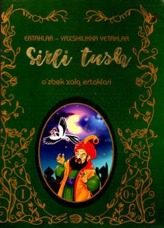

STO'zbek xalq ertaklaridan iborat bolalar uchun sehrli to'plam.
Bu kitob 'Ertaklar – yaxshilikka yetaklar' seriyasining birinchi qismi bo'lib, o'zbek xalq ertaklarini o'z ichiga oladi. Muqovada sehrli tun manzarasi va qushlar bilan tasvirlangan personaj ko'rinadi. Kitob bolalarni yaxshilikka yo'naltiruvchi xalq ertaklarini jamlagan to'plam hisoblanadi.